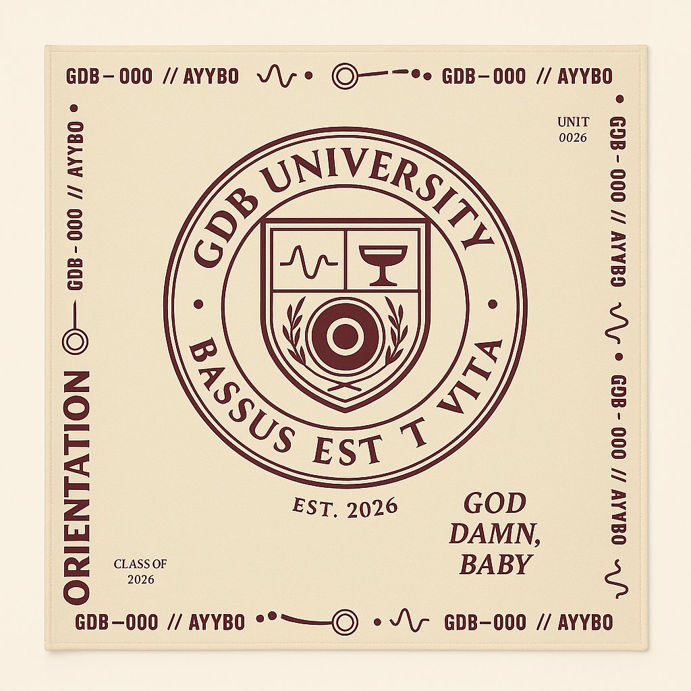
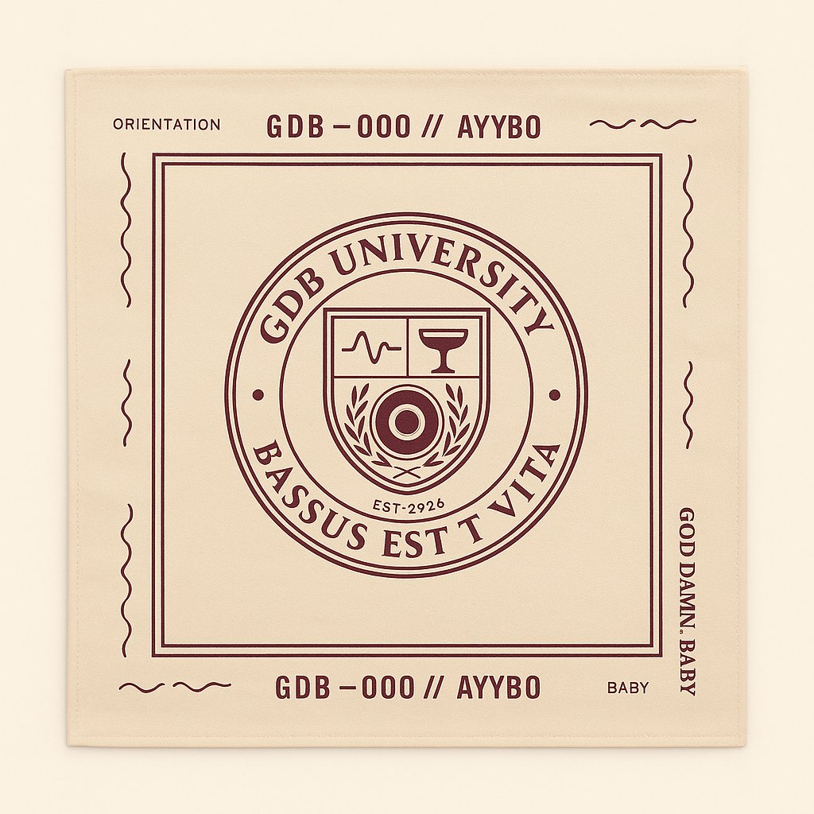
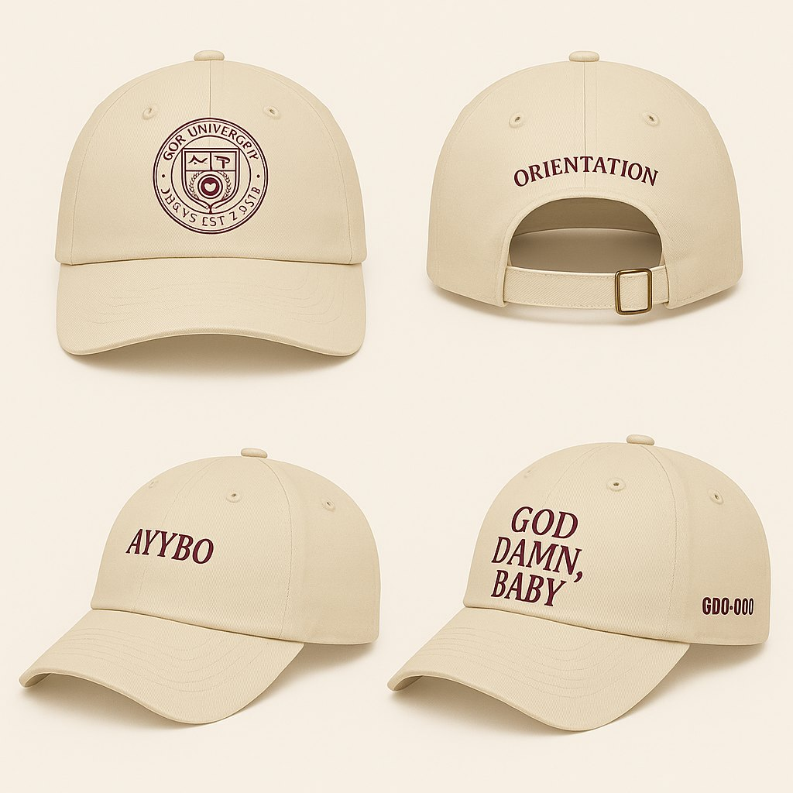
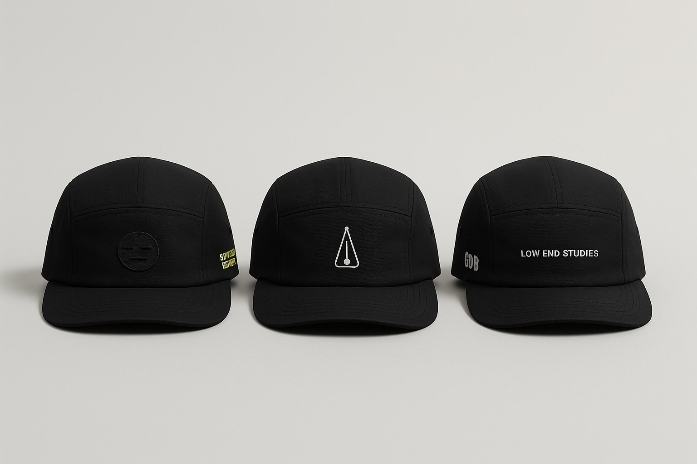
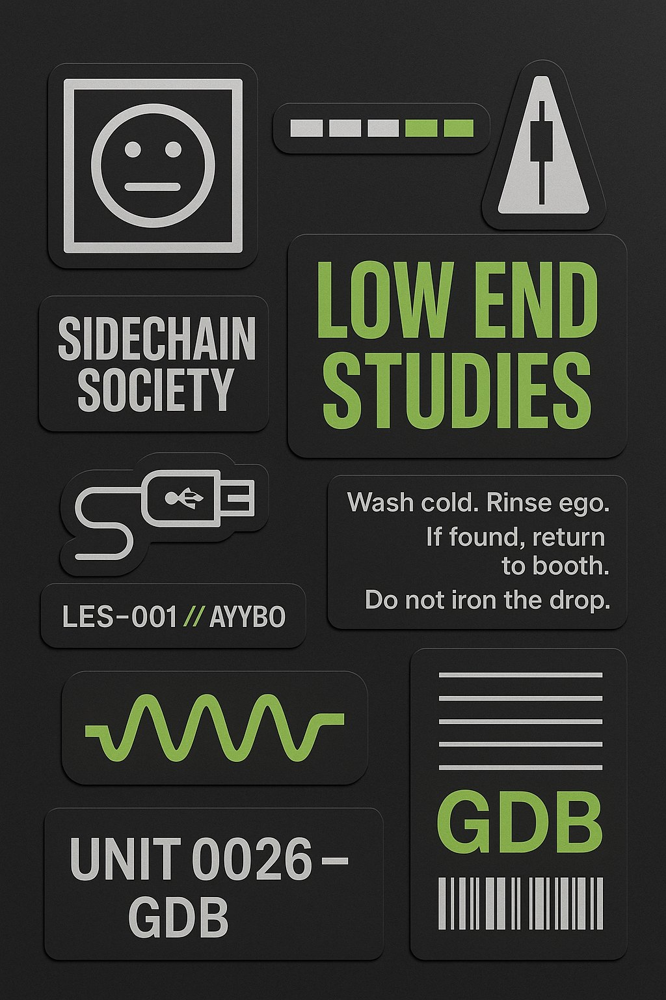
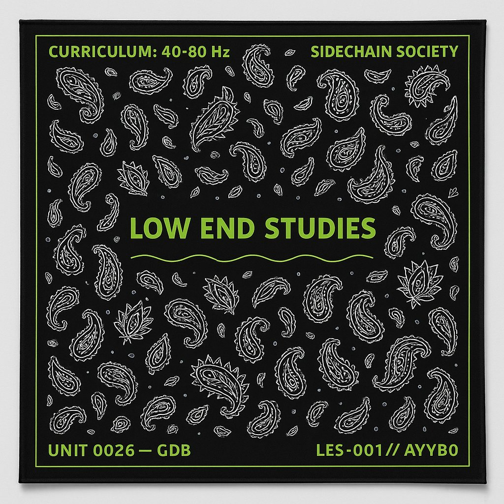
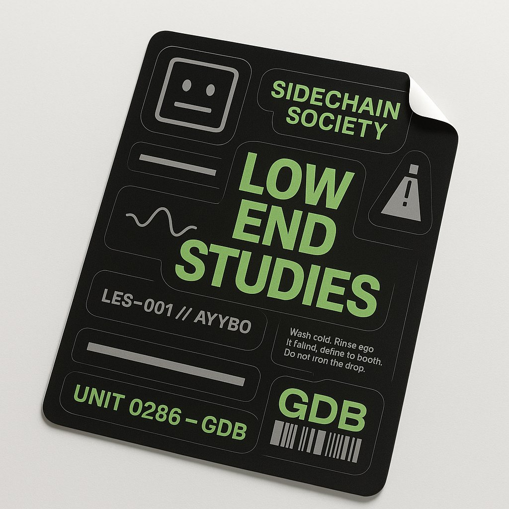

Low End Studies
Bass, sub frequencies, and the art of making the room move.
DEEPER WAVES
Bass, dancefloor energy, and a fictional university built around the feeling of the music.
Bass, sub frequencies, and the art of making the room move.
Energy, bounce, and what happens when a groove finds its people.
Layers, sound design, and the details inside a track.
GDB University is a fan-made creative world. These are identity and merchandise concepts, not a live store or an official artist collaboration.
Twelve crest, clothing, and everyday-object studies from the Orientation collection.








Twelve selected designs: flags, fans, patches, clothing, and small objects with a shared frequency.











A campaign, a fan edit, and a fictional portal story. The film world starts with an ordinary street and follows a signal into somewhere stranger.